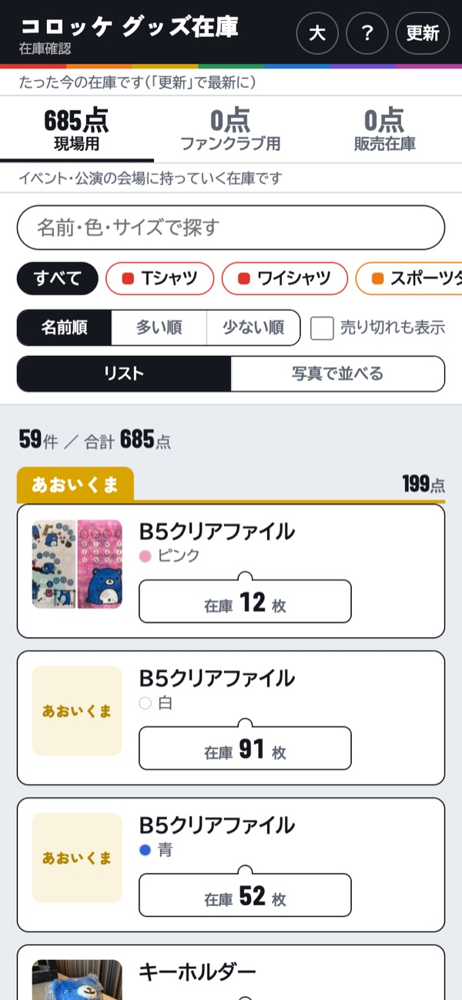
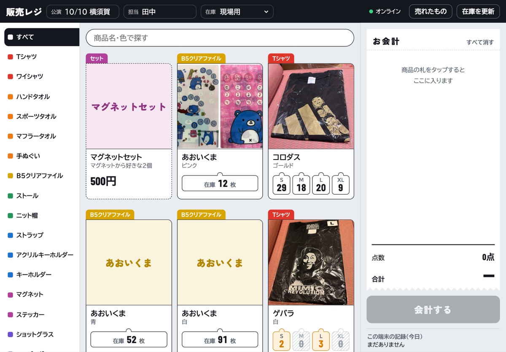
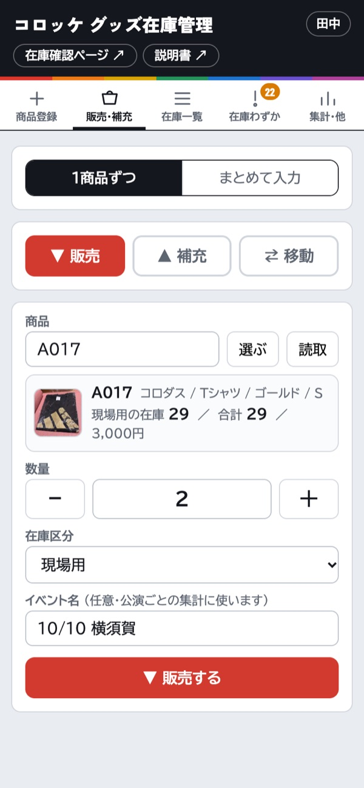
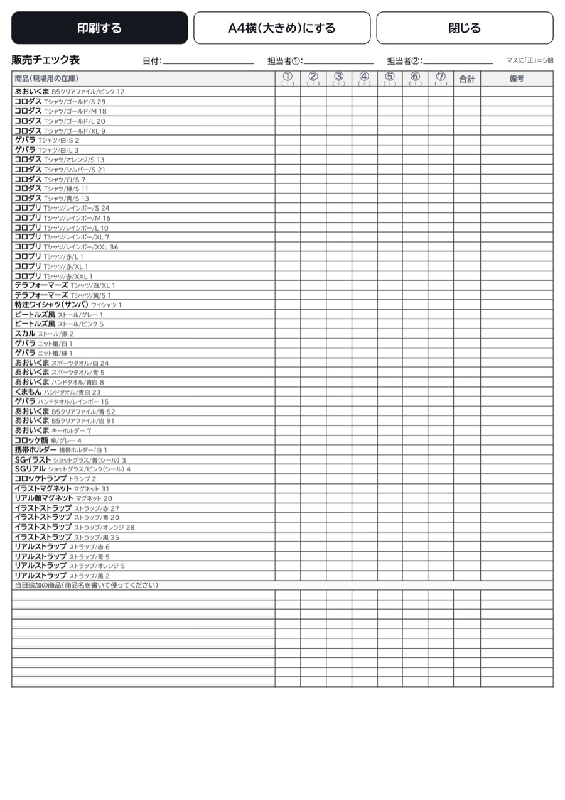

いまある商品と、残りの数がスマホで見られます
見るだけのページなので、どこを押しても在庫は変わりません。安心してさわってください。
スマホのカメラでQRコードを写すと、ページが開きます。
1
ページをひらく
上のアドレスをタップするか、QRコードをカメラで写してください。
はじめて開いたときだけ、「かんたんな使い方」が出ます。読んだら「わかりました」を押してください。
この説明は、あとから右上の ？ でいつでも見られます。
はじめて開いたときの画面
2
画面の見かた
写真の赤い番号と、下の説明の番号が同じ場所です。
- 1大 … 文字が大きくなります。もう一度押すと元に戻ります。
- 2？ … 使い方をもう一度見られます。
- 3更新 … いちばん新しい在庫にします。
- 4場所のタブ … 在庫が置いてある場所ごとに見られます。大きな数字は、その場所にある合計の数です。
- 5さがす … 名前・色・サイズで探せます。
- 6種類のボタン … Tシャツだけ、タオルだけのように絞れます。ボタンの色は種類ごとに決まっています。
- 7並び順 … 名前順・多い順・少ない順を選べます。売り切れも表示にチェックすると、残りが0の商品も出ます。
- 8リスト／写真で並べる … 一覧の見せ方を切りかえます。
- 9残りの数 … サイズごとの残りが、札の形で並びます。

1
2
3
4
5
6
7
8
9
いつも見る画面（在庫の一覧）
4
場所を切りかえる
いちばん上のタブで、在庫が置いてある場所を切りかえます。
- 現現場用 … イベント・公演の会場に持っていく在庫です。
- フファンクラブ用 … ファンクラブ向けに取っておいている在庫です。
- 販販売在庫 … 通販などで販売する在庫です。
最後に見ていた場所は覚えているので、次に開いたときもそのまま出ます。
「ファンクラブ用」を選んだところ
5
商品をさがす
文字を打たずに探すときは、種類のボタン（Tシャツ・タオルなど）を押します。「すべて」を押すと元に戻ります。
言葉で探すときは、「名前・色・サイズで探す」の欄に打ちこみます。ひらがなでも大丈夫です。
「しろ」で白い商品、「てぃーしゃつ」でTシャツ、「xl」でXLサイズが見つかります。欄の右の ✕ を押すと、検索をやめて全部の商品に戻ります。
「Tシャツ」を押すと、Tシャツだけ出ます
「しろ」と入れると、白い商品が出ます
6
大きな写真で見る
商品をタップすると、大きな写真とサイズごとの残りの数が出ます。
見終わったら「閉じる」を押すか、写真の外側を押してください。
商品をタップしたところ
7
写真で並べる
「写真で並べる」を押すと、商品の写真が大きく並びます。お客さまに見せながら選んでもらうときに便利です。
「リスト」を押すと元の一覧に戻ります。
「写真で並べる」にしたところ
8
文字を大きくする
右上の「大」を押すと、画面全体の文字が大きくなります。押すとボタンが白くなり、大きくなっている印になります。
もう一度押すと元の大きさに戻ります。選んだ大きさは、次に開いたときも同じです。
文字を大きくしたところ
9
ホーム画面に置く（おすすめ）
スマホのホーム画面にアイコンを置くと、次からはアイコンを押すだけで開けます。アプリを入れる必要はありません。
iPhone（Safari）
- 画面の下の
（共有）を押す
- 「ホーム画面に追加」を押す
- 右上の「追加」を押す
Android（Chrome）
- 右上の
（メニュー）を押す
- 「ホーム画面に追加」を押す
- 「追加」を押す
ページを開くと、画面の下に案内が出ることがあります。いらないときは ✕ で消せます。
LINEの中で開いたときは、右下のメニューから「Safariで開く」や「ブラウザで開く」を選ぶと見やすくなります。
画面の下に出る案内
?
こまったとき
数が古いような気がする
画面の上に「◯分前の在庫です」と出ています。右上の 更新 を押すと、いちばん新しい在庫になります。しばらく開いたままにしていた場合は、戻ってきたときに自動で新しくなります。
「読み込み中…」のまま進まない
電波の良い場所で、右上の 更新 を押してください。それでも出ないときは、ページを一度閉じて開きなおしてください。
写真が出ない
写真は少し遅れて出ることがあります。数秒待つか、更新 を押してください。写真がまだ撮られていない商品は、商品名が大きく出ます。
探している商品が出てこない
検索の欄に文字が残っていないか、種類のボタンが選ばれたままになっていないか確かめてください。残りが0の商品は、「売り切れも表示」にチェックを入れると出てきます。
ここで在庫を変えられますか？
このページは見るだけです。会場で売るときは「売る（販売レジ）」、在庫を直すときは「管理する（管理画面）」を使います。上のボタンで説明を切りかえられます。
会場では、販売レジで1会計ずつ記録します
iPadやスマホで商品の札を押して「会計する」を押すと、売れた数がその場で記録され、在庫も減ります。電波がない会場でも使えます。
準備
1
公演の前に（ネットがつながる場所で）
- 上のアドレスを開き、ホーム画面に追加します（やり方は「見る」の ホーム画面に置く と同じです）。
- はじめて開くとパスワードを聞かれます。管理画面と同じパスワードです。一度入れれば、その端末では次から聞かれません。
- 上の欄に公演（例：10/10 横須賀）・担当（自分の名前）を入れ、在庫は「現場用」を選びます。公演ごとの売上に使います。
- ネットがつながる場所で一度開いておきます。画面・在庫・商品写真が端末に保存され、会場で電波がなくても開けるようになります。
パスワードは、ほかの人に送ったり、見える場所に書いたりしないでください。
2
画面の見かた（iPad横向き）
- 1公演・担当・在庫 … 準備で入れた内容です。公演が変わったら書きかえてください。
- 2オンライン … 電波の状態です。送れていない会計があると「未送信 ◯件」と出ます。
- 3売れたもの … 今日売れた商品と、締めの金額チェックが見られます。
- 4在庫を更新 … いちばん新しい在庫にします。
- 5種類 … 押すと、その種類だけ出ます。色は「見る」の画面と同じです。
- 6さがす … 商品名や色で探せます。
- 7サイズの札 … 押すと、そのサイズが1つお会計に入ります。数字は残りの数です。
- 8お会計 … 入れた商品と合計がレシートのように出ます。
- 9会計する … 押すと販売が記録されます。
- 10この端末の記録 … 今日この端末でした会計が並びます。

1
2
3
4
5
6
7
8
9
10
販売レジの画面（iPadを横にしたところ）
会計
3
商品を入れる
サイズの札を押すと、その商品が1つお会計に入ります。2枚なら2回押します。お会計に入っている数は、札の右上に黒い丸で出ます。
商品の写真を押すと、サイズを大きなボタンで選ぶ画面が出ます。
お会計の ＋ − で数を直せます。すべて消す で、お会計を空にできます。
残りが0の札は斜線になり、押せません。お会計に入れた分は、札の数字から先に引かれます。
写真を押すと出る、サイズを選ぶ画面
4
セット販売（マグネットなど）
「セット」の札（例：マグネットセット 500円）を押すと、中身を選ぶ画面が出ます。お客さまが選んだ商品を、決まった数だけ押して カゴに入れる を押します。
マグネットはセットだけで売る商品です。1個ずつの札は出ないので、必ずセットの札から入れてください。
セットの値段や中身は、管理画面の「集計・他 → 価格・セット販売」で決めます。
セットの中身を2つ選んだところ
5
お預かり・おつり → 会計する
- 1商品と数を確かめます。
- 2合計の金額をお客さまに伝えます。
- 3お預かりに受け取った金額を入れます。「ちょうど」「＋1,000」などのボタンでも入れられます。
- 4おつりが緑の大きな数字で出ます。足りないときは「あと◯円」と赤で出ます。
- 5会計するを押します。これで販売が記録され、在庫が減ります。
お預かりは、おつりの計算のためだけに使います。入れなくても会計できます。
お預かり15,000円で、おつり4,500円
会計すると、右下の「この端末の記録」に入ります
6
まちがえたとき・すぐキャンセルされたとき
右下の この端末の記録 で、その会計の 取り消す を押します。ボタンが「もう一度押すと取消」に変わるので、もう一度押すと取り消されます（押しまちがい防止のため2回です）。
取り消した会計には線が引かれ、在庫も元に戻ります。そのあと、正しい内容でもう一度会計してください。
電波が
ないときも取り消せます。くわしくは 電波がないとき を見てください。
1回押すと「もう一度押すと取消」に変わります
7
売れたもの・締め（精算チェック）
上の 売れたもの を押すと、ほかの端末の分も合わせた、今日売れたものが見られます。
- 順会計の順番 … 会計ごとに、時刻・担当・中身・金額が並びます。取り消した会計には線が引かれます。
- 数商品ごとの個数 … 何が何個売れたかが、種類ごとに多い順で並びます。
公演が終わったら、上の 締め の欄に、レシートや現金を数えた実際の金額を入れます。記録の合計と同じなら「ぴったりです」、ちがうと差額が出ます。
上の選択欄で、昨日より前の日や、公演ごとの合計に切りかえられます。
会計の順番（ここでは撮影用の会計を取り消したあと）
8
電波がないとき
電波がなくても、いつもと同じように会計できます。会計は端末に保存され、電波が戻ると自動で送られます。
- 1右上が オフライン（未送信 ◯件） になります。
- 2まだ送っていない会計には 未送信 と出ます。在庫の数は、その場で減ります。
- 3未送信の会計の 取り消す（2回押す）で、その会計を消せます。在庫も元に戻ります。
電波があるときに送った会計を、電波がない間に取り消すこともできます。記録に「取消（つながったら送ります）」と出て、電波が戻ると取り消しも送られます。
売れたもの は、電波がない間はこの端末の記録だけで出ます（未送信の会計も入ります）。
レジを2台使っていて両方とも電波がないときは、もう1台で売れた数はお互いに見えません。在庫が少ない商品は、レジの係どうしで声をかけてください。
電波がないときに会計したところ
9
スマホで使う
スマホでも同じように使えます。種類のボタンは上に横一列で並び、お会計は画面の下の黒い帯にまとまります。
- 1公演・担当 … 押すと、公演・担当・在庫の欄が開きます。
- 2下の帯 … 点数と合計が出ます。押すとお会計の画面が開き、おつりの計算と会計ができます。
スマホの販売レジ
→
下の帯を押すと、お会計が開きます
?
こまったとき
「通信が途中で切れました」と出た
記録できている場合があります。すぐにやり直さず、右下の記録と在庫の数を見て、会計が入っているか確かめてください。入っていなければ、もう一度会計します。
札が押せない
残りが0の商品は押せません。実物があるのに0になっているときは、上の 在庫を更新 を押してください。それでも0なら、管理する人に「棚卸し」で数を直してもらってください。
マグネットを1個だけ入れたい
マグネットはセットだけで売る商品です。「マグネットセット」の札から2個選んでください。
合計が「価格未設定」と出る
その商品にまだ値段が入っていません。管理する人に「価格・セット販売」で値段を入れてもらってください。会計はそのままできます。
電波がない場所で開けない
ネットがつながる場所で、一度もレジを開いていない端末は、電波がないと開けません。公演の前に、ホーム画面から一度開いておいてください。
「未送信」がずっと消えない
電波の良い場所に移ると、20秒ごとに自動で送ります。すぐ送りたいときは、レジを開き直してください。
入った数・売れた数を記録して、在庫をいつも正しく保ちます
管理画面で記録した数は、すぐに在庫確認ページと販売レジにも反映されます。まちがえても、あとから取り消せます。
準備
1
はじめに開くとき
はじめて開くとパスワードを聞かれます。パスワードは、管理の担当者から教えてもらってください。一度入れれば、その端末では次から聞かれません。
つぎにお名前を聞かれます。入れておくと、だれが記録したかが販売履歴に残ります。名前は、画面右上の名前のボタンからいつでも変えられます。
パスワードは、ほかの人に送ったり、見える場所に書いたりしないでください。管理画面では在庫を変えられるためです。
パスワードを入れて「開く」
お名前を入れて「保存する」
2
画面の全体
画面の上に5つのタブが並んでいます。やりたいことに合わせて押してください。
タブの上の 在庫確認ページ ↗ を押すと、お客さまが見る在庫のページが開きます。説明書 ↗ を押すと、この説明書が開きます。
会場で1会計ずつ売るときは、管理画面ではなく 販売レジ を使います（上の「売る」を見てください）。管理画面の「販売・補充」は、あとからまとめて記録するときや、補充・移動に使います。
毎日の記録
3
売れた数を1つずつ記録する
販売・補充 を押して、「1商品ずつ」を選びます。
- 1▼ 販売 を選びます（赤くなっていればOK）。
- 2選ぶ を押すと、写真つきの一覧から商品を選べます。商品IDを覚えていなくて大丈夫です。
- 3読取 を押すと、商品に貼ったQRラベルをカメラで読み取れます。
- 4数量を ＋ − で合わせます。
- 5どこの在庫から売れたか（在庫区分）を選びます。
- 6イベント名を入れると、公演ごとの売上が分かります（入れなくてもOK）。
- 7▼ 販売する を押します。

1
2
3
4
5
6
7
「販売・補充」の画面
4
確認して、記録する
「販売します。よろしいですか？」と、商品と数が出ます。合っていれば ▼ 販売する、ちがっていれば やめる を押します。
記録できると 販売しました と出て、在庫の数が「29 → 27」のように変わったことが分かります。
記録する前に、必ず確認が出ます
→
記録できたら、下に「取り消す」が出ます
5
まちがえたとき
記録したあと、画面の下に黒い帯が出ます。まちがえたときは ↩ 取り消す を押し、確認で 取り消す を押すと、在庫が元に戻ります。
取り消せるのは 24時間以内の「販売・補充・移動・棚卸し」です。
棚卸しのあとの帯は、10秒たつと自動で消えます。
帯を ✕ で消してしまったときや、24時間より前のものは、反対の操作（売った数を「補充」する、など）で直してください。
「取り消しますか？」の確認
イベント・公演の日
6
販売チェック表で数える（レジを使わないとき）
販売レジを使えないときは、紙の販売チェック表に「正」の字で数えておき、あとでまとめて記録します。
在庫一覧 を押して、販売チェック表 を押すと、いま在庫がある商品の一覧が入った表が出ます。印刷する から、A4・縦で印刷してください（1枚に入ります）。字を大きくしたいときは A4横（大きめ）にする を押します。
時間帯①〜⑦のマスに、売れるたびに線を1本ずつ書きます。5本で「正」が1つ＝5個です。
いちばん下に空欄があります。当日いきなり出た商品は、ここに名前を書いて使ってください。上には日付と担当者2名の欄があります。
① 在庫一覧の「販売チェック表」

出てくる表（上の「印刷する」で印刷します）
7
公演のあとに、まとめて記録する
販売チェック表の「合計」を見ながら、まとめて記録します。
- 1販売・補充 で 「まとめて入力」を選び、▼ 販売・在庫区分・イベント名を合わせます。
- 2売れた商品の ＋ を、売れた数だけ押します。多すぎたら − で減らします。
- 3画面の下に「◯商品 ◯点」と合計が出ます。確認へ を押し、内容が合っていれば ▼ 販売する。
途中で画面を閉じても、入れた数はその端末に残っています。「商品をさがす」の欄に名前を入れると、目的の商品がすぐ見つかります。読取 でQRラベルを読むと、1回で＋1されます。
数を入れると、下に合計と「確認へ」が出ます
確認して「▼ 販売する」
8
商品が入ったとき・場所を移すとき
売れたときと同じ画面の、上のボタンを切りかえます。
- ▲▲ 補充 … 商品が入って、在庫が増えたとき。
- ⇄⇄ 移動 … 「現場用」から「ファンクラブ用」のように、置き場所を移すとき。移動元と移動先を選びます。合計の数は変わらず、売上にも入りません。
そのあとの流れ（商品を選ぶ → 数量 → 確認）は、販売と同じです。
▲
⇄
上のボタンで「補充」「移動」に切りかえ
商品の管理
9
新しい商品を登録する
商品登録 を押して、上から順に入れていきます。
- 1カテゴリ（商品名）・種別・色を入れます。一度入れた名前は、打ちはじめると候補に出ます。
- 2サイズは、あるものを全部押して選びます（黒くなったものが選ばれています）。選んだ数だけ、まとめて登録されます。
- 3価格を入れると、売上金額が集計できます（空でもOK）。
- 4撮影する でその場で写真を撮れます（なくてもOK）。
- 5初期在庫に、サイズごと・場所ごとの数を入れて、まとめて登録する を押します。
同じ商品がもうあるときは、黄色い文字で知らせます。そのときは登録せずに、「販売・補充 → ▲ 補充」で数を足してください。
商品情報とサイズを選んだところ
サイズごとの在庫を入れて「まとめて登録する」
10
在庫一覧の見かた
在庫一覧 には、全部の商品が商品名ごとに並びます。サイズ違いは1つにまとまり、サイズごとの在庫が札で出ます。
- 1サイズの札 … 押すと、その商品を選んだ状態で「販売・補充」に移ります。
- 2直す … サイズのボタンを押すと、その商品の情報を直せます。
写真を押すと、写真を大きく見たり、差しかえたりできます。写真がない商品は 写真を登録 から撮れます。上の「写真なしだけ」にチェックすると、写真がない商品だけが出ます。
在庫一覧（サイズごとの札）
11
商品を直す・販売を終える
在庫一覧 の 直す を押すと、名前・種別・色・サイズ・価格を直せます。在庫の数や履歴は変わりません。
もう仕入れない商品は、販売終了にする を押してください。在庫確認ページ・販売レジ・「在庫わずか」から消えます。データは残るので、あとで「販売中に戻す」こともできます。
この商品を削除 は、2回押すと本当に消えます。元には戻せません。ふだんは「販売終了」を使ってください。
「直す」で開く画面
下にある「販売終了」と「削除」
12
数え直す（棚卸し）
実際の数と画面の数が合わないときに使います。
- 1在庫一覧 の 棚卸し を押し、数える場所（在庫区分）を選びます。
- 2数えた数を、商品ごとに入れます。入れなかった商品はそのままです。
- 3下の 確認へ を押すと、差がある商品だけが出ます。確かめて 反映する を押します。
棚卸しで直した数は、売上には入りません。途中でやめても、入れた数はその端末に残ります。反映したあとの「取り消す」の帯は、10秒で消えます。
数えた数を入れる
差がある商品だけ確認して「反映する」
13
在庫わずか・まとめて販売終了
在庫わずか には、合計が5以下の商品が、少ない順に並びます。タブの上の数字は、売り切れを除いた「残りわずか」の件数です。
▲ 補充 を押すと、その商品を選んだ状態で補充の画面に移ります。
もう仕入れない商品をまとめて販売終了にするときは、商品の左のチェックを入れるか、上の すべて選ぶ・在庫切れだけ選ぶ で選び、赤い 選んだ ◯件を販売終了にする を押します。選んだ商品の一覧が出るので、確かめてから決めます。
メールなどのお知らせは送りません。気になったときにこのタブを見てください。
14
売上を見る（集計）
集計・他 を押すと、月ごとの販売数・補充数・売上金額が出ます。集計を更新する を押すと最新になります。
下のイベント別では、イベント名を付けて記録した販売を、公演ごとに見られます。
売上金額は、商品に価格を入れてから売れた分だけ計算されます。
15
価格・セット販売
集計・他 のいちばん下、その他 の 価格・セット販売 で、商品の値段（税込）をまとめて入れられます。サイズ違いには同じ値段が入ります。
下のセット販売では、「マグネットから好きな2個で500円」のようなセットを作れます。セットだけで売る にチェックすると、販売レジではその種類を1個ずつ入れられなくなり、セットからだけ選べます。
値段を空欄にして保存すると、そのセットは消えます。いちばん下の空欄に入れると、セットを追加できます。
16
その他の機能・注意
- A持ち出し・残数チェック（集計・他） … 公演の前に「持ち出す数」を記録し、終わったら「残った数」を入れて確定すると、差（持ち出し − 残り − レジで記録済みの分）が販売として記録されます。
- B売上レポート（集計・他） … 期間か公演を選ぶと、印刷やPDFで保存できる売上の一覧を作ります。
- C売り場の並び順（集計・他） … 会場の机に並べる順にしておくと、在庫確認ページ・販売レジ・販売チェック表がその順になります。
- D写真なしを続けて登録・撮りためた写真を割り当て（在庫一覧） … 写真がない商品に、続けて写真を付けられます。サイズ違いには同じ写真が付きます。
- E値札・POP印刷／QRラベル印刷（在庫一覧） … 会場に置く値札や、袋に貼るQRラベルを印刷できます。QRラベルは「読取」で読むだけで商品を選べます。
- Fお客さま用QR（集計・他） … 在庫確認ページのQRコードを大きく印刷できます。
- Gバックアップ … 週に1回、管理画面を開いたときに自動で在庫表のコピーが作られます（Googleドライブの「コロッケ在庫 バックアップ」）。「今すぐバックアップ」でも作れます。
- H在庫表から取り込む（商品登録のいちばん下） … 別の在庫表のアドレスを貼って比べると、まだ登録されていない商品だけを登録できます。
- I在庫表を直接書きかえるとき … 書きかえた数は在庫確認ページにも出ますが、販売履歴に残らず、集計にも入りません。数を合わせたいときは「棚卸し」を使ってください。
?
こまったとき
「通信が途切れました」と出た
記録できている場合があります。すぐにやり直さず、まず「在庫一覧」の 更新 を押して、数が変わっているか確かめてください。変わっていなければ、もう一度記録します。
もう一度パスワードを聞かれた
パスワードが変わったか、端末の記録が消えた可能性があります。管理の担当者に確かめて、もう一度入れてください。
「在庫が足りません」と出た
選んだ場所（在庫区分）の数より多く売ろうとしています。場所が合っているか確かめてください。実際の数と合わないときは「棚卸し」で数を直します。
取り消しができない
24時間より前の記録や、あとから在庫が動いて元に戻せないときは取り消せません。反対の操作（売った数を「補充」する、など）で直してください。
販売チェック表の下があいてしまう
用紙を A4・縦 にして印刷してください。表は用紙の下まで自動で伸びます。印刷の「倍率」は 100% にしてください。
カメラ（読取）が使えない
ブラウザがカメラの使用を聞いてきたら「許可」を押してください。使えないときは、選ぶ から写真で選べます。